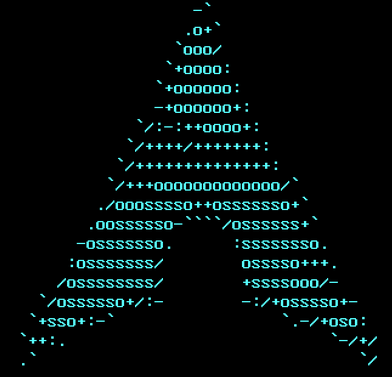

News
Note January 15th 2023: I am currently going through a period where my morale is very low and I am facing some personal problems,
for this reason I have not presented any projects/articles lately, I prefer to concentrate on the essential.
I'll be back very soon! ^^
WhatsApp, 500 million users' data would be in circulation. (November 2022)
Minecraft seed converter is out! (October 2022)
Enter your minecraft world generation seed, and convert it to Minecraft java or bedrock!

I've changed the SB plateformer logo (And I take up it development)! (October 2022)
It's is not yet available for download, but you can become a beta tester, just contact me by mail or by discord! (for more informations, please see june news below:) )
I also plan to place this project as developed by Malwprotector!
Number of security vulnerabilites fixed by microsoft's patch tuesday during the containment of march 2020 (September 2022)
Social networks, find out how to manage your anonymity and protect yourself in this digital world. (August 2022)

the sbot plateformer video game is in development! (June 2022)
Some time ago, I started to create a video game, using the godot game engine (if you are interested).
It is not yet available for download, but you can become a beta tester, just contact me by mail or by discord! :)
I also plan to place this project as developed by Malwprotector!

android-x86: installation guide (June 2022)
I have created a tutorial to install ArchLinux! (May 2022)

learn how to use binary! (April 2022)

Malwprotector Update tool, save your data! (April 2022)
Malwprotector Save Tool is a utility that allows you to make backups to an external disk. Warning, it is in test version, major problems may occur. Let me know your feedback on my email address contactgillionmartin@gmail.com !
Make a excel table with Python script! (March 2022)
Make space on Linux by cleaning up the installation archives! (March 2022)
I have created a interactive map to find bins in Mons Belgian city! (February 2022)
Is it possible to dualboot Linux and freeDOS?(January 2022)
MultiN multiple browsers is now available!(December 2021)
MultiN is a website that you can eventually pin as your homepage;
it allows you to access several search engines like google,
duckduckgo and many others simultaneously!

FreeDOS: Installing on virtualbox(November 2021)
I have created a pong game with levels! (lol), you can check out here! (November 2021)


This work is licensed under a
CC BY-NC-SA 4.0 License.